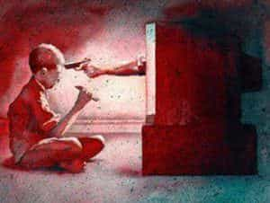

Leo is a writer with a passion for helping other Patriarchs in the West to hold their heads high under the heavy weight of their responsibilities as fathers, brothers, and sons. To read more by Leo Pryde, check out www.plannedvictory.com


Every culture that ever held masculine virtues as the cornerstones of morality has been focused on the strength of the family unit, or clan. This unit takes the form of two parents and their children, but can vary from culture to culture in how much influence the extended blood family have within the unit. Grandparents often take the role of the clan elder, with the younger generations looking to them for wisdom and assisting with the transmission of norms and values to their children.
On the other hand, you might have found that horizontal family branches may have less direct contact with each other, instead revolving around a common ancestor for family gatherings. No matter what the peculiarities of the family unit structure, they have always been at their greatest in leading the youth to a functional role in society.

The globalist elite hate the power of a strongly bonded family, because they know that this cohesion is what prevents their victim-empowering, self-hatred encouraging propaganda from taking root in the minds of impressionable children. They struggle to overpower this with every institution. Schools ram their twisted ideology down the throats of children the instant that parents leave them at the gates.
Those children who do not begin to parrot the insanity back to their handlers fast enough are diagnosed with some form of disorder, and forcefully medicated to dull their minds and sense of independence. Signs placed in bus stations warn of the consequences of “hate crime” for those who would dare to defend their own kind against foreign invaders. No mention is ever made of what rights, if any, you have to protect yourself from unprovoked violence from minority groups.
All of this and more is thrown relentlessly at you, your spouse and your children. If you stand by idly, eventually you will begin to hear these same pathetic sentiments emerging from their mouths. If you are particularly weak, then you will join the chorus. As soon as you do, you will find yourself forced to your knees, and everything you held dear taken from you. Your money, property and actions are no longer your own to control. You are merely given access to these things in return for doing as you are told.
I understand this is a bleak image, but it is an image that is increasingly blocking out all others across Western Civilization as a whole. Thankfully, there is a way to fight back against this. You may be afraid to join mass protests for fear of retribution. You may be afraid to take a stand against the established political players that offer a choice between being robbed from the left or from the right. You may be afraid, but unless you want this to become a daily reality with no way out, you must fight.
I do not mean that you should slap your children if they mimic the other indoctrinated children they share classes with. Victory comes, not from violence, but rather from ideological superiority.
If you have heard of the concept of frame you will know that, in a debate or argument, the person with the strongest frame is the most persuasive. In order to hold a frame strong enough to protect your family from moral corruption carried out on a global level, you must build your family around masculine virtues. A patriarchal core, drawing inspiration from history, philosophy and warrior-ethics, insulates the minds of the next generation from the insidious propaganda machine blaring at them from every other angle.
Your home must be a safe space. Not in the sense of a safe space for women and their feminist allies. It must be secured against all angles of attack. TV viewing habits should be controlled in terms of content and also how frequently. An easy way to establish the expectation that TV should not interfere with family time, and therefore with family ties, is to ban any use of the TV during meal times.
Likewise, all other media, digital or otherwise, should be completely restricted during meals. You must lead this by example. You cannot expect your children to respect your law if you will not adhere to the same standards. It is your job as the patriarch of your family to stand as a shining example of what they can be if they embody the same principles.
Have you ever noticed how stunted and awkward social interaction becomes when everyone involved has half of their attention being sucked away by screens? Teaching your family that they can have meaningful existence without these distractions is beneficial on multiple levels. Your sons will be better equipped to deal with the complexity of human interactions. You may not wish to start introducing the concepts of game until your children are older, but being able to take part in face to face communication will put them at the head of the pack when their time comes, in both business and pleasure. Whilst you will be teaching your children valuable life lessons, the true benefits of this are immediate.
Bonding as a family is an intensely rewarding experience, and infinitely more so when each member of the family takes a genuine interest in each other. There is nothing worse than enthusiastically asking your son about his day, only to have him demand to play with your smartphone in response, and cry if refused. Do yourself, and your family a favour. Keep the damn screens away from your shared time, and don’t let them turn into spoiled princesses.
Many of the parents I know praise their children endlessly. By now, this should come as no surprise to you. This type of willfully blind parenting results in weak, narcissistic and “woe is me” adults that are incapable of taking care of themselves. Their children, if they are ever able to gather the balls to approach a woman, will likely be so damaged beyond repair that they will forever be dependent on others for the most basic needs.
If you value your genetic legacy, it is your duty to prevent things from ever reaching this stage. Let others destroy themselves if they are unwilling to open their eyes to the world around them, but do not let yourself shuffle meekly into the same inter-generational suicide that they have allowed themselves to be railroaded into.
Begin by teaching your children basic masculine values through the use of stories. They can be ones that you have crafted yourself if you possess the creative skills, or could be written by another (preferably from earlier times). The fundamental values you must show to be worthy of pursuing in a man’s character are: honour, duty, and strength.
I do not mean these in their modern, corrupted understanding of the words. If you think of honour as being synonymous with putting the desires of others before your own, you are mistaken. It is essential you seek the truth of what these words mean first.
When your children are older and are ready to begin competing with their peers in various ways, they will be driven forward to their own victories by these values. Those who gravitate towards the field and sporting achievement will make excellent members of any team, whether it be as a visionary captain or as a loyal, hard-working defense against their opponents. They will struggle in the face of adversity, and come out the other side standing tall. Whether they win, or lose, they will learn how to keep moving forward, whilst others cry at the first sign of hardship.
Later still in life, these same values and early scuffles will form the inner essence of the man that was once a young boy who needed your help to tie his shoes, and teach him the language of your people. This is the man who you will one day stand, shoulder to shoulder, against the hordes of leftist parasites that seek to take from you what you built. If you have raised this man in a masculine manner, and given him the mindset of a warrior, then neither your son nor yourself will be afraid of those who come for you.
With the whole of your clan standing beside you, you are untouchable.
 If you like this article and are concerned about the future of the Western world, check out Roosh's book Free Speech Isn't Free. It gives an inside look to how the globalist establishment is attempting to marginalize masculine men with a leftist agenda that promotes censorship, feminism, and sterility. It also shares key knowledge and tools that you can use to defend yourself against social justice attacks. Click here to learn more about the book. Your support will help maintain our operation.
If you like this article and are concerned about the future of the Western world, check out Roosh's book Free Speech Isn't Free. It gives an inside look to how the globalist establishment is attempting to marginalize masculine men with a leftist agenda that promotes censorship, feminism, and sterility. It also shares key knowledge and tools that you can use to defend yourself against social justice attacks. Click here to learn more about the book. Your support will help maintain our operation.
Read More: How To Raise A Red Pill Revolutionary